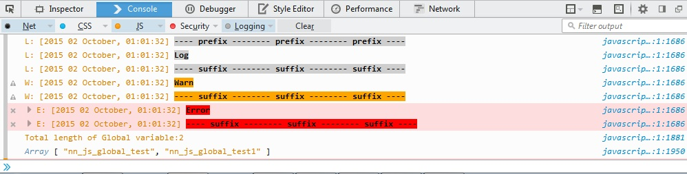
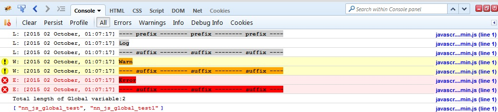

var logObj=NN_JS_Log(); //default mode: dev and color: true
var logObj=NN_JS_Log({mode:'pro'});
| Property | |
| Property Name | Description |
| mode | Tell which mode should be loaded. |
| color | Color log/warn/error should be enable or not. |
| show_log | Log should be enable or not. |
| prefix | Set message for prefix. What to show before console. (default: null) |
| repeat | How many time to repeat the message of prefix and suffix. (default: 1) |
| suffix | Set message for suffix. What to show after console. (default: null) |
| Method | ||
| Method Name | Parameter | Description |
| log | mgs | Print mgs on console. |
| warn | mgs | Print mgs on console. |
| error | mgs | Print mgs on console. |
| global | variableName,variableValue | Create global variable, when log is enable. Global name start with nn_js_global_{variableName}. |
| alert | mgs | Show the alert. |
| globalDef | void | Show all the global variable in console(Array). |
var logObj=NN_JS_Log({color:true});
logObj.prefix='---- prefix ----';
logObj.suffix='---- suffix ----';
logObj.repeat=3;
logObj.log('Log');
logObj.prefix=null;
logObj.warn('Warn');
logObj.error('Error');
var a='global testing';
logObj.global('test',a);
logObj.global('test1','global_testing');
logObj.alert('Js manager test');
logObj.globalDef();
Firefox Console

Firebug
